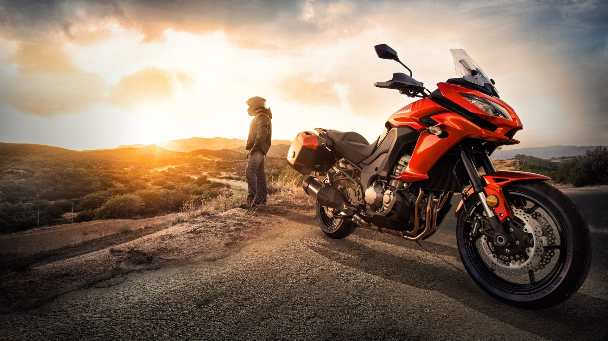

Versys 1000se
Kawasaki Versys 1000 SE (คาวาซากิ เวอร์ซิส 1000 เอสอี) รถบิ๊กไบค์สไตล์ทัวริ่ง(Adventure Touring) ที่มาพร้อมเครื่องยนต์สี่สูบเรียงและโครงสร้างรถที่คล่องตัวตอบสนองไว เบาะนั่งถูกปรับในท่านั่งหลังตรงนั่งสบาย ช่วยให้ขับขี่ได้ง่ายขึ้นปกป้องตัวผู้ขับขี่จากกระแสลมได้ดี
พร้อมพาคุณออกเดินทางไปได้ทุกที่ที่ใจคุณต้องการ
Kawasaki Versys 1000 SE มาพร้อมเครื่องยนต์ DOHC 4 สูบเรียง 16 วาล์ว 1,043 ซีซี ขนาดกระบอกสูบ x ช่วงชัก 76 x 55 มิลลิเมตร อัตราส่วนการอัด 13.0:1 ระบบเกียร์ 6 สปีด ระบบจุดระเบิด Digital ระบายความร้อนด้วยของเหลว ระบบจ่ายน้ำมันเชื้อเพลิง หัวฉีดขนาดเส้นผ่านศูนย์กลาง
38 มิลลิเมตร x 4 มิลลิเมตร .
Kawasaki Versys 1000 SE มากับมิติตัวรถ กว้าง x ยาว x สูง 2,270 มิลลิเมตร x 950 มิลลิเมตร x 1,530 มิลลิเมตร เบาะนั่งสูง 820 มิลลิเมตร ระบบกันสะเทือนหน้า เทเลสโคปิค Up Side Down KECS-controlled 43 มิลลิเมตร ระบบกันสะเทือนหลัง Horizontal Back-link, BFRC lite gas-charged shock with piggyback reservoir, KECS-controlled compression and rebound damping and electronic spring preload adjustability ระบบเบรกหน้า ดิสก์เบรกคู่ขนาด 310 มม. พร้อมระบบ ABS Dual radial-mount ระบบเบรกหลัง
ดิสก์เบรกเดี่ยวขนาด 250 มม. พร้อมระบบ ABS ขนาดความจุถังน้ำมัน 21 ลิตรน้ำหนักรถ 257 กิโลกรัม
